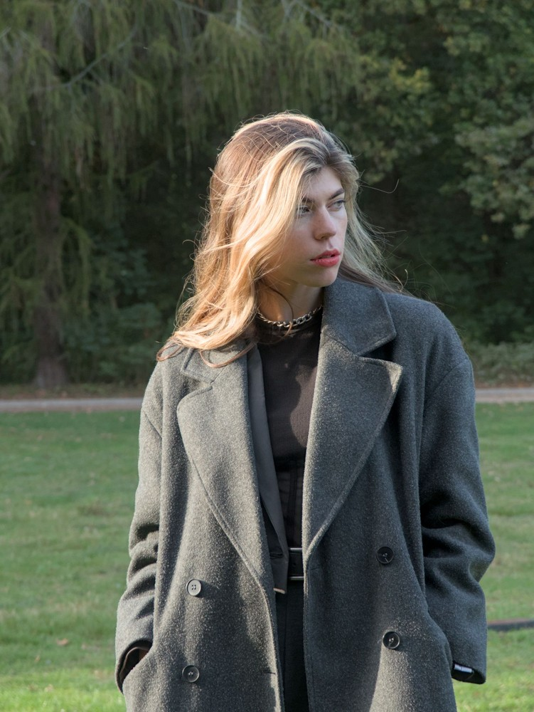

The Bespoke Outerwear Classes
Each silhouette represents centuries of sartorial evolution, cut individually to your measurements in heavy British and Italian woolens. Available for bespoke commissions and fitting appointments.
The Officer Double-Breasted Greatcoat
Heavy 750g British melton wool with broad peak lapels, inverted back pleat, and martingala half-belt.
The Raglan Balmacaan
One-piece raglan sleeve overcoat in heavy Irish tweed with Prussian storm collar and fly front closure.
The Single-Breasted Chesterfield
Refined black or midnight navy wool-cashmere with velvet collar insert and ticket pocket.

The Houndstooth Ulster Coat
Bold traditional Ulster collar with turnback cuffs and patch pockets crafted in Scottish Saxony wool.
The Loden Hunting Coat
Naturally water-resistant Tyrolean loden wool with deep inverted back pleat and leather buttons.
The Pure Cashmere Polo Coat
Unrivaled softness and warmth in double-faced camel cashmere with framed envelope patch pockets.